水氣的飽和與相變
- 溫度愈高的空氣，可容納的水氣愈多，即飽和水氣壓愈高。
- 原圖橫軸溫度、縱軸水氣壓；中間那條往右上彎的是飽和曲線。
- 曲線右下方：未飽和區（實際水氣壓＜飽和水氣壓）。
- 曲線左上方：過飽和區（水氣通常已開始凝結，不會持續停留）。
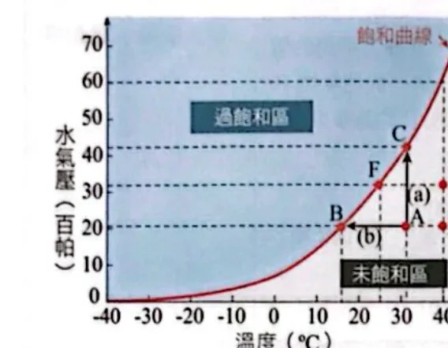
飽和曲線左方是未飽和區，右方（陰影）是過飽和區；A、B、C、D、E、F都是曲線上下的參考點原講義PDF第6頁・印刷第108頁・點圖放大
露點與相對溼度
- 露點溫度：水氣壓不變，純降溫使空氣達飽和，此時的溫度。
- 露點只由實際水氣壓決定，跟當下氣溫無關。
- 兩團空氣只要實際水氣壓相同，露點就相同（即使氣溫差很多）。
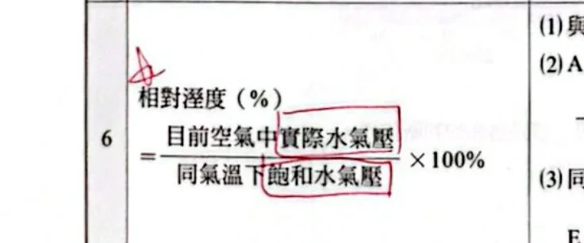
相對溼度＝目前空氣中實際水氣壓 ÷ 同氣溫下飽和水氣壓 ×100%原講義PDF第6頁・印刷第108頁・點圖放大
鈺亮分別在9月1日與11月1日在地科教室測量氣溫與實際水氣壓，數據如下表（飽和水氣壓請參考飽和曲線：30°C約40 hPa）：
| 9月1日 | 11月1日 |
|---|
| 氣溫 | 30°C | 25°C |
|---|
| 實際水氣壓 | 35 hPa | 20 hPa |
|---|
- 哪一天的露點溫度較高？請說明判斷方式。
- 9月1日空氣的相對溼度為多少？(A)35% (B)40% (C)77.5% (D)87.5% (E)94.3%
- 假設11月1日當天水氣量均無改變，請問當天露點溫度約為幾度？(A)15°C (B)17°C (C)20°C (D)25°C (E)27°C
看答案與詳解收起
答①9月1日的露點溫度較高。②D，87.5%。③B，約17°C。
解第1題：露點溫度只由實際水氣壓決定，跟當下氣溫無關。9月1日實際水氣壓35 hPa，大於11月1日的20 hPa，所以9月1日對應的飽和溫度（露點）較高。不能用「9月1日氣溫30°C比較高」來推論，氣溫跟露點是兩件事。
第2題：相對溼度＝實際水氣壓÷同氣溫下飽和水氣壓×100%。9月1日氣溫30°C，飽和水氣壓約40 hPa，所以相對溼度＝35÷40×100%＝87.5%，選D。
第3題：水氣量不變即實際水氣壓維持20 hPa；露點溫度就是「飽和水氣壓等於20 hPa」所對應的溫度。對照飽和曲線，這個溫度約落在17°C附近（與前文A、D兩點實際水氣壓21 hPa、露點17°C的讀值相近），選B。
小結先認住：露點只看實際水氣壓；相對溼度的分母要配對「當下這個溫度」的飽和水氣壓，兩者不要混著用。
乾溼球溫度計
- 乾球：量當時氣溫。
- 溼球：紗布上的水蒸發吸熱，使讀數低於乾球。
- 環境愈乾燥 → 蒸發愈多 → 吸熱愈多 → 溼球愈低 → 乾溼溫差愈大。
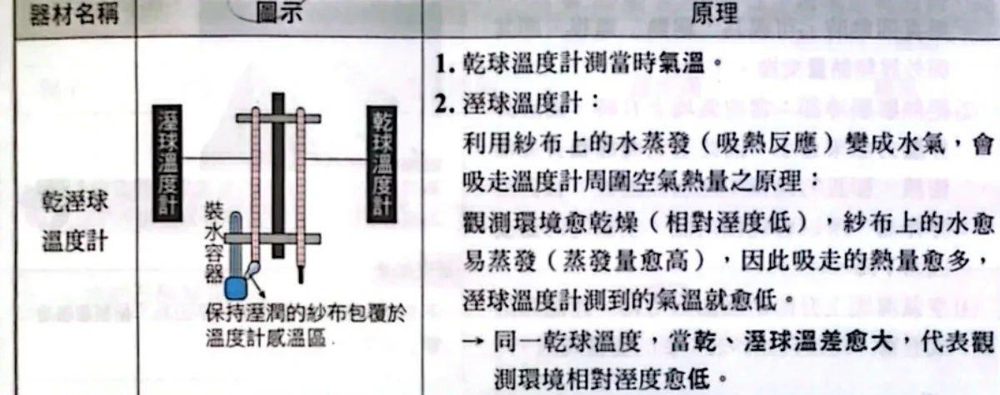
乾溼球溫度計：溼球紗布靠水分蒸發吸熱降溫，環境愈乾燥，乾、溼球溫差愈大原講義PDF第7頁・印刷第109頁・點圖放大
已知甲地氣溫為17°C，水氣達飽和；乙地乾球溫度為20°C，露點溫度17°C。請問：
- 甲地乾球溫度、溼球溫度各為何？
- 乙地溼球溫度可能為？ (A)20°C (B)18.5°C (C)17°C
看答案與詳解收起
答①乾球＝溼球＝17°C。②B，18.5°C。
解第1題：水氣已達飽和時，乾球溫度＝溼球溫度＝露點溫度，三者相等，都是17°C。
第2題：乙地水氣未達飽和（乾球20°C≠露點17°C），這時三者的大小關係是「乾球 ＞ 溼球 ＞ 露點」，即 20°C ＞ 溼球 ＞ 17°C。選項中只有(B)18.5°C落在這個範圍內；(A)20°C會跟乾球相等（代表飽和，矛盾），(C)17°C會跟露點相等（也代表飽和，矛盾）。
小結飽和時三溫相等；未飽和時乾球＞溼球＞露點，答案要落在這個嚴格介於中間的範圍。
寒假時，文詠、伊克、茜茂、士桓四人同一時刻分別在不同地點，用乾溼球溫度計量測，數據如下：
| 文詠（甲） | 伊克（乙） | 茜茂（丙） | 士桓（丁） |
|---|
| 氣溫（乾球） | 17.5°C | 20°C | 22.5°C | 10°C |
|---|
| 相對溼度 | 90% | 78% | 68% | 82% |
|---|
- 表二（乾球減溼球溫度所得之差值對相對溼度）中，這個差值會不會有負值？原因為何？(A)會，因為水氣凝結釋放潛熱，溼球可能≥乾球 (B)會，因為水分蒸發釋放潛熱，溼球可能≥乾球 (C)不會，因為水氣凝結吸收潛熱，溼球一定≤乾球 (D)不會，因為水分蒸發吸收潛熱，溼球一定≤乾球 (E)不會，因為水溫一定低於氣溫，溼球一定較低
- 四人中誰測得的溼球溫度最低？(A)文詠 (B)伊克 (C)茜茂 (D)士桓 (E)四人一樣低
- 四個地區中，露點溫度何處最低？飽和水氣壓何處最高？實際水氣壓何處最低？
看答案與詳解收起
答①D。②D，士桓。③露點溫度最低、實際水氣壓最低都是士桓（丁）；飽和水氣壓最高是茜茂（丙）。
解第12題：溼球溫度計測到的低溫，機制是紗布上水分「蒸發」會「吸收」潛熱，使溼球溫度一定小於或等於乾球溫度，差值不會是負值，答案D。A、B把蒸發／凝結與吸熱／放熱配錯；C把機制誤植為「凝結」（乾溼球裝置其實是蒸發，不是凝結）；E的理由（水溫一定低於氣溫）不是這個裝置的真正原理，不能保證恆成立。
第13題：查表二，先在乾球溫度那一列中找到對應相對溼度的欄位，讀出差值，再用乾球溫度減去差值：
文詠：17.5°C列中90%對應差值1.0 → 溼球17.5−1.0＝16.5°C。
伊克：20°C列中78%對應差值2.5 → 溼球20−2.5＝17.5°C。
茜茂：22.5°C列中68%對應差值4.0 → 溼球22.5−4.0＝18.5°C。
士桓：10°C列中82%對應差值1.5 → 溼球10−1.5＝8.5°C。
四人溼球溫度分別約16.5、17.5、18.5、8.5°C，最低的是士桓，選D。
第14題：用飽和水氣壓近似公式（Tetens公式）分別估計四地的飽和水氣壓與實際水氣壓（實際水氣壓＝相對溼度×飽和水氣壓）：文詠約20.0 hPa×90%≈18.0 hPa；伊克約23.4 hPa×78%≈18.3 hPa；茜茂約27.3 hPa×68%≈18.5 hPa；士桓約12.3 hPa×82%≈10.1 hPa。可見士桓的飽和水氣壓與實際水氣壓都明顯低於其他三人（氣溫最低），對應的露點溫度也最低；茜茂氣溫最高，飽和水氣壓最高。
小結查相對溼度表，要先鎖定「乾球溫度那一列」，再找對應相對溼度的欄位讀差值；比較露點、飽和水氣壓、實際水氣壓，三者都跟各自的氣溫、相對溼度連動，氣溫最低的一組通常飽和水氣壓與露點也最低。
雲、霧、露、霜
- 成因相同：空氣冷卻達飽和、水氣凝結或凝固。
- 高空發生 → 雲；接近地面或海面 → 霧。
- 附著物體表面，液態 → 露；固態 → 霜。
- 需要凝結核：乾淨空氣即使飽和也難凝結，靠氣膠等微粒讓水氣分子聚集。
絕熱冷卻
- 空氣是熱的不良導體 → 垂直運動時可視為絕熱（與外界無熱量交換）。
- 上升：外界氣壓變小 → 空氣塊膨脹 → 對外作功 → 耗內能 → 降溫。
- 下沉：外界氣壓變大 → 空氣塊壓縮 → 外界對它作功 → 內能增 → 升溫。
乾絕熱直減率與溼絕熱直減率
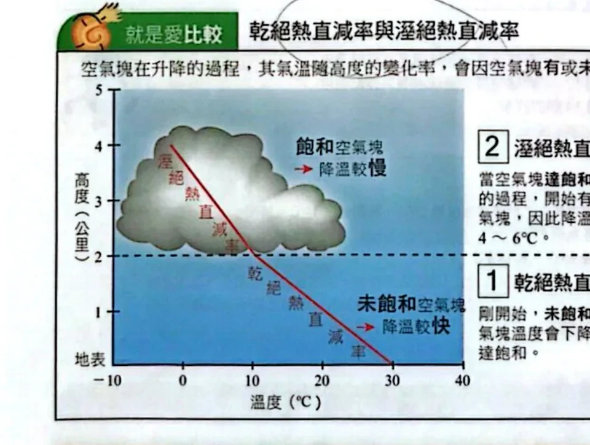
同一張圖比較未飽和空氣塊（乾絕熱，降溫快）與飽和空氣塊（溼絕熱，降溫慢）原講義PDF第8頁・印刷第110頁・點圖放大
- 同一空氣塊：未飽和先走①（較陡），達飽和後轉走②（較緩）。
- 圖上斜率轉折點＝抬升凝結高度（成雲高度）。
空氣塊垂直運動的常見原因
下列關於空氣中水氣的敘述，哪兩項正確？
- 氣溫愈高，空氣愈容易達到飽和。
- 實際水氣量較多的空氣塊，其相對溼度不一定比實際水氣量較少的空氣塊高。
- 環境大氣相對溼度愈高，水愈容易蒸發成水氣。
- 上升氣流容易使水氣凝結、釋放潛熱。
- 當露點溫度低於0°C，空氣降溫到露點溫度時，有機會使水氣凝華成冰。
看答案與詳解收起
答D、E。
解A錯：氣溫愈高，飽和水氣壓愈高，代表要裝進更多水氣才會飽和，應該是「愈不容易」達到飽和，不是愈容易。
B正確但不是本題要選的敘述：它說的「水氣量多不保證相對溼度高」方向沒錯（因為還要看各自溫度對應的飽和水氣壓），但這題只應選2項，D、E兩項直接對應課文明確寫出的機制（絕熱冷卻釋放潛熱、低溫凝華成冰），是本題鎖定的標準答案。
C錯：相對溼度愈高，代表空氣愈接近飽和，水氣愈不容易再蒸發進入空氣中，方向說反了。
D對：上升氣流使空氣塊絕熱膨脹冷卻，達飽和後水氣凝結，會釋放潛熱給空氣塊——這正是第6節溼絕熱直減率變慢的原因。
E對：露點溫度低於0°C時，空氣降溫到露點溫度，水氣有機會不經過液態，直接凝華成冰晶，呼應第4節「霜」與凝華的概念。
小結判斷這類敘述，先問：它說的方向，跟「溫度愈高、飽和水氣壓愈高」「相對溼度愈高愈難再蒸發」這兩條基本規則一致嗎？
請問下列哪些是可引發空氣塊做垂直運動、且會隨之發生的正確現象？（應選3項）
- 冷暖氣團相遇，暖空氣塊沿界面上升，使暖空氣塊體積逐漸縮小。
- 氣流越過山脈，空氣塊於背風坡下沉，使空氣塊體積逐漸縮小。
- 低層空氣向低壓中心匯聚，引發空氣塊上升，使空氣塊氣溫逐漸上升。
- 高層空氣輻合，輻合中心空氣塊下沉，使空氣塊氣溫逐漸上升。
- 低層空氣受地表加熱而密度變小，使空氣塊上升，空氣塊氣溫因而下降。
看答案與詳解收起
答B、D、E。
解先守住一條規則：空氣塊上升→體積膨脹、溫度下降；空氣塊下沉→體積壓縮、溫度上升。逐一檢查：
- A錯：暖空氣沿界面「上升」，應該是絕熱膨脹，體積應該變大，不是縮小。
- B對：空氣塊在背風坡「下沉」，外界氣壓變大，體積被壓縮而縮小，方向正確。
- C錯：低層輻合造成空氣塊「上升」，應該絕熱膨脹冷卻、溫度下降，不是上升。
- D對：高層輻合中心空氣塊「下沉」，絕熱壓縮增溫，氣溫上升，方向正確。
- E對：地表加熱使空氣塊上升，絕熱膨脹冷卻，氣溫因而下降，方向正確。
小結凡是看到「上升」卻接「體積縮小」或「溫度升高」，或「下沉」卻接「體積膨脹」或「溫度下降」，方向就反了。
- 水三態互換：水氣／冰＝凝華／昇華；水氣／水＝凝結／蒸發；水／冰＝凝固／融化。
- 水循環：液態水吸熱蒸發、水氣凝結放潛熱，重新分配地球能量，產生天氣現象；生活淡水多直接或間接來自降水。
秀惠與冠之於12月6日早上10點分別在宜蘭蘇澳與嘉義布袋鹽田測量，假設整日空氣中水氣量未改變，結果如下表：
| 氣溫 | 露點溫度 | 氣壓 | 當日最高溫 | 當日最低溫 |
|---|
| 宜蘭蘇澳 | 16°C | 13°C | 1017 hPa | 19°C | 14°C |
|---|
| 嘉義布袋鹽田 | 17°C | 8°C | 1015 hPa | 20°C | 8°C |
|---|
- 10點時兩地比較，下列何者正確？(A)蘇澳氣溫較低，因此其相對溼度較低 (B)布袋露點溫度較低，因此其相對溼度較高 (C)蘇澳氣壓較高，因此其空氣中可容納的水氣較多 (D)布袋氣溫與露點溫度差距較大，其相對溼度較低 (E)布袋當日最低溫較低，因此布袋整天的相對溼度較高
- 承上題，假設兩地當日最低溫均發生於清晨，則兩地清晨哪一個較易起霧？(A)宜蘭蘇澳 (B)嘉義布袋鹽田
看答案與詳解收起
答①D。②B，嘉義布袋鹽田。
解第1題：比較氣溫與露點溫度的差距（愈小，相對溼度愈高）：蘇澳16−13＝3°C；布袋17−8＝9°C。布袋的差距較大，相對溼度較低，故D正確。A把「氣溫較低」直接當成「相對溼度較低」的理由，邏輯跳過了露點，並不成立；C的氣壓不會直接決定空氣能容納多少水氣（那是看溫度的飽和水氣壓）；E的「最低溫較低」不能單獨推出「整天相對溼度較高」。
第2題：水氣量整日不變，即露點溫度整日不變。比較「清晨最低溫」跟「露點溫度」的差距：蘇澳14−13＝1°C（還差1°C才到飽和）；布袋8−8＝0°C（清晨最低溫恰好等於露點溫度，已經達到飽和）。所以布袋清晨更容易起霧，選B。
小結判斷相對溼度高低，比氣溫與露點溫度的差距；判斷會不會起霧，看氣溫能不能降到露點溫度。
判圖題組：空氣塊會不會持續上升
- 圖上紅線＝空氣塊自身溫度（先陡後緩）；藍線＝周圍大氣溫度。
- 紅線斜率轉折點＝成雲高度，也是這團空氣的露點溫度。
- 比較同高度紅、藍兩線：紅線高於藍線（空氣塊較暖、密度小）→ 繼續上升；反之傾向下沉或停止。
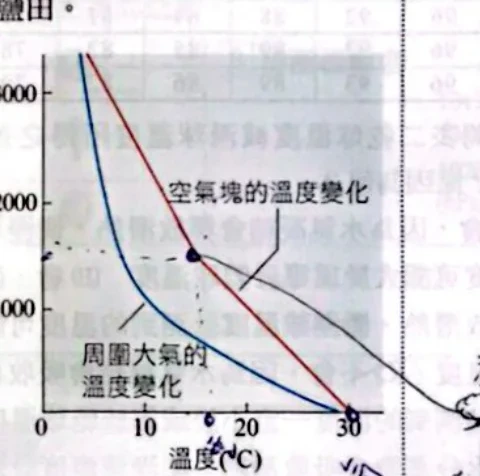
空氣塊上升的溫度變化（紅線）與周圍大氣溫度（藍線）；兩線交會處就是飽和、開始成雲的高度原講義PDF第11頁・印刷第113頁・點圖放大
右圖為某地空氣塊上升過程氣溫的變化（紅線），及周圍大氣溫度隨高度的變化（藍線）。當空氣塊溫度高於周圍大氣，則空氣塊易上升。依此回答：
- 依圖判斷雲霧的形成高度為何？(A)1000公尺 (B)1500公尺 (C)2000公尺 (D)2500公尺 (E)3000公尺
- 假設空氣塊上升過程中跟外界沒有熱量交換、水氣量也無改變，且一達飽和即有雲雨產生，由圖推斷該空氣塊露點溫度為何？(A)8°C (B)15°C (C)18°C (D)22°C (E)25°C
- 在高度2000公尺時，此空氣塊將如何運動？(A)繼續上升 (B)繼續下降 (C)停留在此高度
- 請問當空氣塊上升至3000公尺處時，露點溫度約幾度？
看答案與詳解收起
答①B，1500公尺。②B，15°C。③A，繼續上升。④約6°C。
解第8、9題：紅線一開始走乾絕熱直減率（較陡，每公里約降10°C，尚未飽和），到了某個高度斜率轉緩，改走溼絕熱直減率——這個轉折點就是空氣塊開始飽和、成雲的高度，也就是抬升凝結高度。依原圖讀值，轉折發生在約1500公尺，對應溫度約15°C；這個溫度就是空氣塊的露點溫度（因為水氣量不變，露點溫度本來就不隨高度改變——除非已經開始凝結、水氣量才會變動）。
第10題：2000公尺已經超過轉折點（1500公尺），空氣塊走的是溼絕熱直減率，降溫比周圍大氣（藍線）慢；圖上這個高度，紅線（空氣塊溫度）仍高於藍線（周圍大氣溫度），空氣塊密度較小、仍具浮力，所以會繼續上升，選A。
第11題：空氣塊一旦達到飽和、開始成雲，之後上升會有水氣持續凝結、降水排出，實際水氣量已經在改變，不能再用「水氣量不變」直接推算露點；但依原圖讀值，3000公尺處對應的露點溫度約6°C，是沿圖上溼絕熱那段繼續讀值的結果。
小結轉折點＝乾絕熱轉溼絕熱＝成雲高度＝（未飽和前）露點溫度；之後比紅、藍兩線哪個高，就知道空氣塊還會不會繼續上升。
本單元整理
下一節把「上升」接到更大尺度的風：氣壓梯度力與科氏力如何決定風向。
核對原講義全頁（地科2 PDF6–12）
本節對應印刷108–114頁。原頁保留手寫筆記與紅筆訂正；以本頁推導與題目條件核對，不把手寫選項當作答案依據。
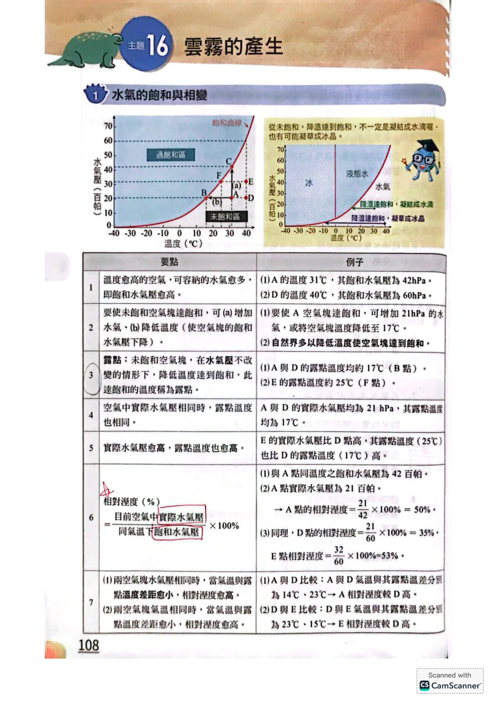
PDF第6頁／印刷第108頁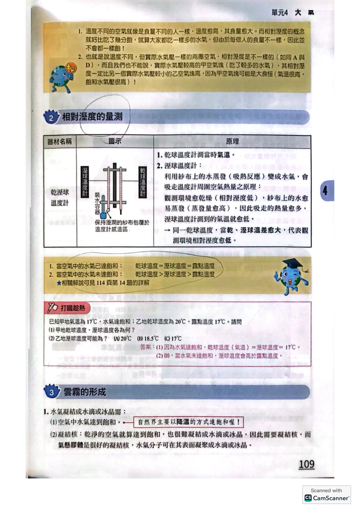
PDF第7頁／印刷第109頁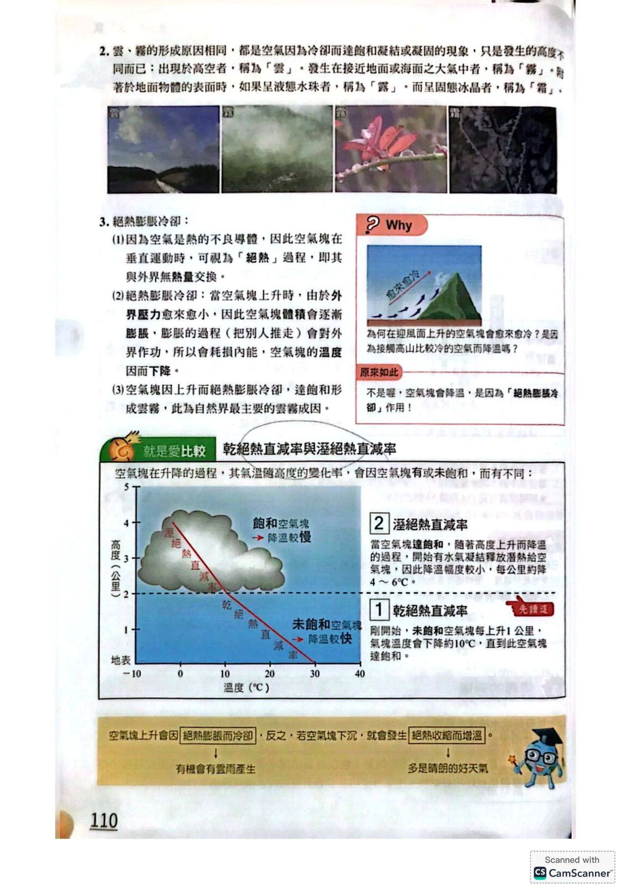
PDF第8頁／印刷第110頁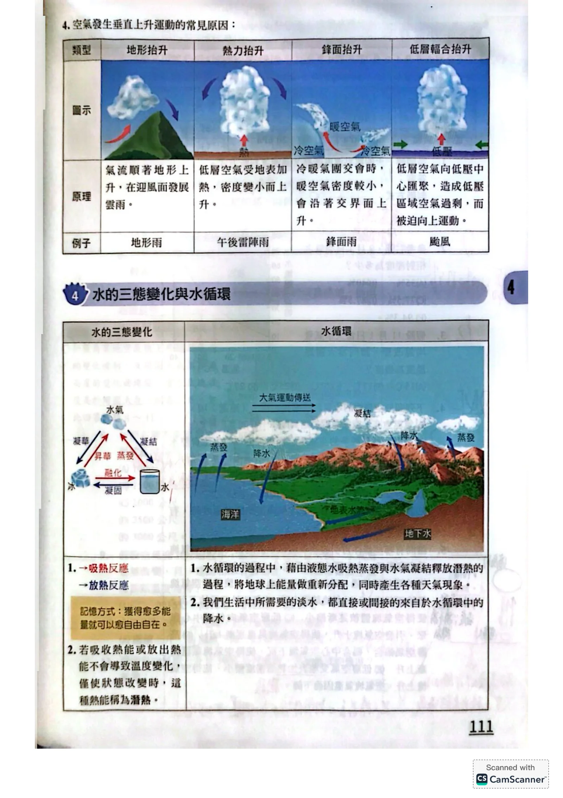
PDF第9頁／印刷第111頁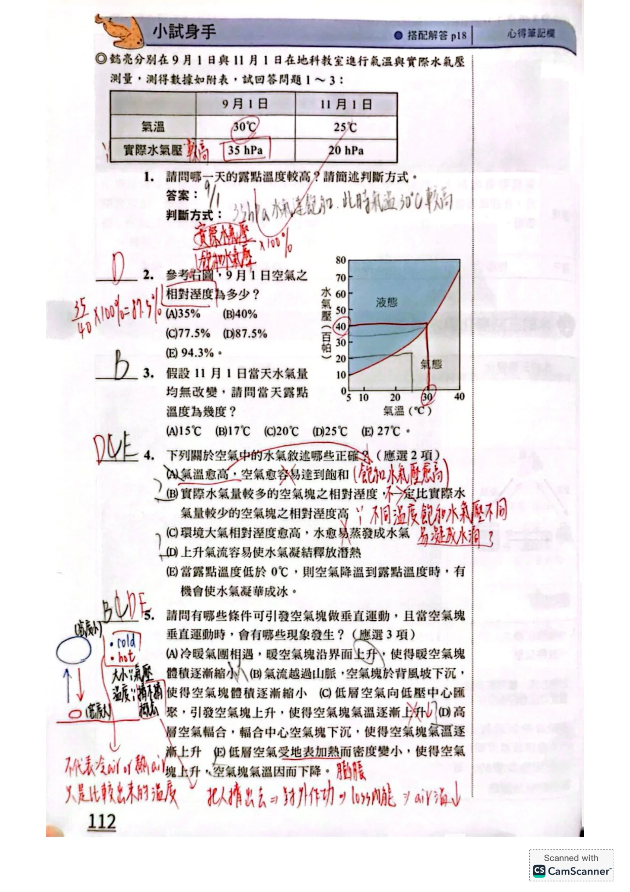
PDF第10頁／印刷第112頁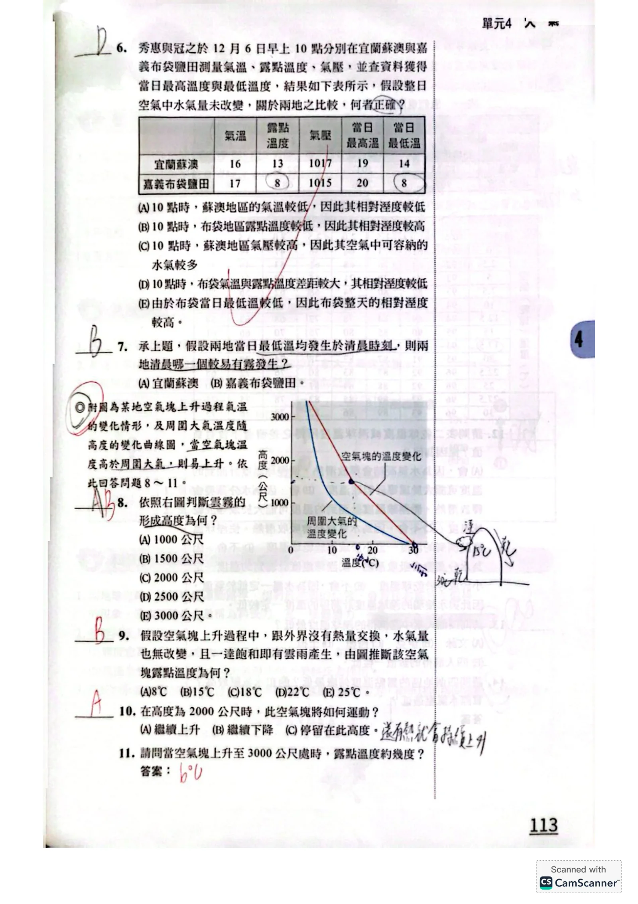
PDF第11頁／印刷第113頁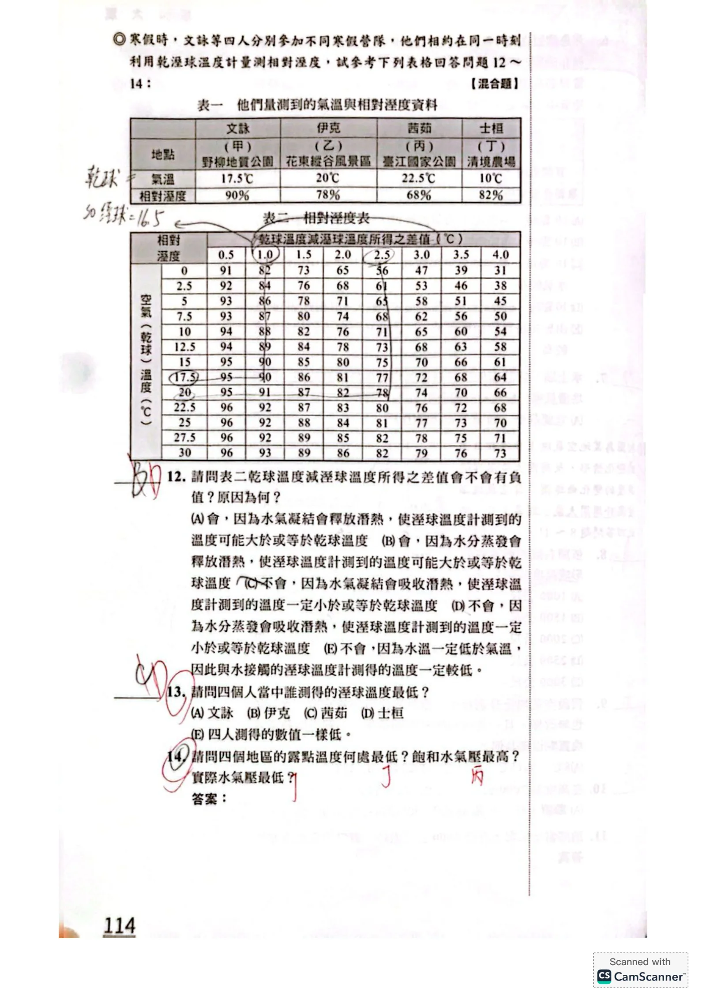
PDF第12頁／印刷第114頁延伸核對：美國國家氣象局：露點與相對溼度；乾溼球溫度計原理。